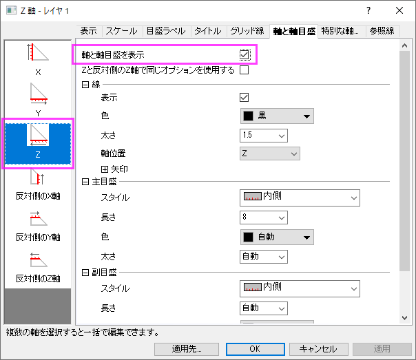

1つのZ列（あるいは、その部分領域）を選択する必要があります。 このZ列に結びついたXY列がある場合、そのXY列が使われます。そうでない場合、ワークシートのデフォルトのX値とY値が使われます。
データを選択メニューからと選択します。
TERNARYRIGHT.otpu (Originのプログラムフォルダにインストールされています)。
直角三角形の三点グラフは三点グラフの変形ですが、直角三角形の座標で作図されます。X軸とY軸が直交する正三角形で、Z軸は斜辺です。
三角グラフと同様に、直角三角形の三点グラフは、入力データが規格化されていると見なします。これは各行のセルの絶対値の合計が1または100(|x|+|y|+|z|=1または100)という意味です。詳細は、三点グラフに関する説明を参照してください。
軸をカスタマイズするには、X軸またはY軸をダブルクリックして軸ダイアログボックスを開きます。そして
ただし、方向が異なり、目盛りは対角でZ軸に平行に表示されます。
